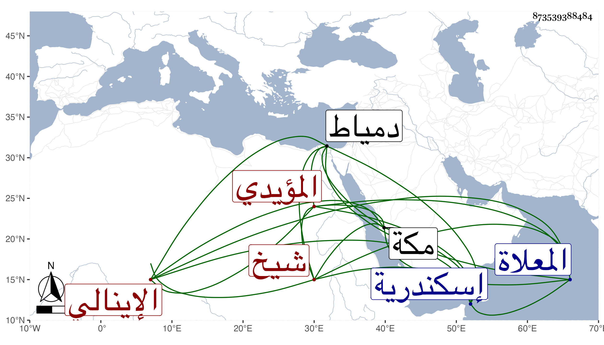

0902Sakhawi.DawLamic.ITO20230111-ara1.EIS1600.873539388484
Biography ID: 873539388484
1071
يرشباي الإينالي المؤيدي شيخ ، صار بعده خاصكيا واستمر حتى عمله الظاهر جقمق أمير آخور رابع ثم أمير عشرة ثم أمير آخور ثالث ثم ثاني بل صار من الطبلخانات وعظم وضخم واشترى بيت الأتابك أيتمش بقرب باب الوزير وجدده وسد بابه من جهة الطريق واستمر بباب سره بجوار باب جامع سنقر ثم قبض عليه المنصور وحمل إلى إسكندرية ثم نقله الأشرف إلى دمياط ثم أعاده وأمره عشرة ثم طبلخانات ثم عينه لمكة على الترك المقيمين بها ، وبنى بناحية المعلاة مسجدا عند سبيل القديدي يعلق عنده الحيات لخفة عقله فاستمر حتى مات بها في جمادى الأولى ووهم من أرخه في رجب سنة أربع وستين وقد ناهز الستين وكان طوالا مليح الشكل تام الخلقة فيه سكون وحشمة مع إسراف على نفسه سامحه الله .
